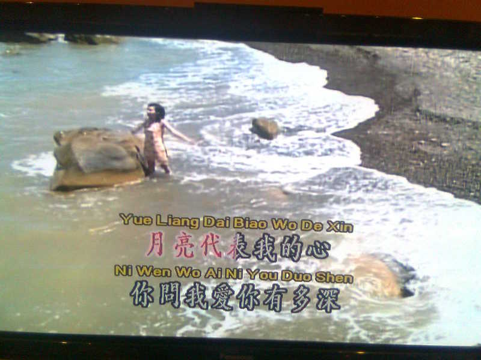
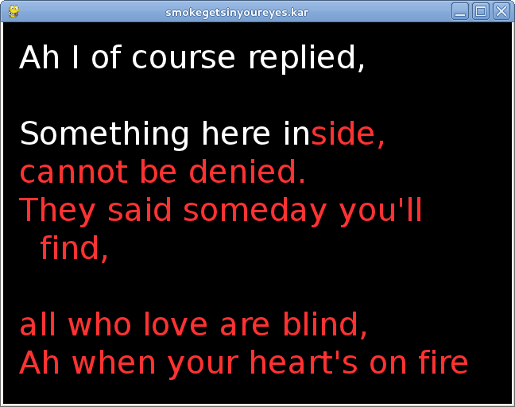

The MP3 and CDG files usually share the same root
e.g. Track1.mp3 and Track1.cdg. When unzipped,
vlc can play them by giving it the
MP3 file only to play as in
vlc Track1.mp3
Other players such as mplayer do not recognise this combination and only play the audio.
Buying CD+G or MP3+G files
There are many sites selling CD+G or MP3+G songs. Just do a Google search. However, the average price per song is about US$3, and if you want to build up a large collection that can become very expensive. Some sites will give discounts for larger volume purchases, but even at US$30 for 100 songs, the expense can be high.
The cheapest site for really large collections that I have found so far is Unify mall There you can purchase (for example) 29,000 English CDG songs for US$399. There is a little hiccup in this: if you buy their "UNIFY PCKP1000A 500-2000GB HDD MP4/DVD/CDG PC Karaoke Player" for US$559 you should be able to get these English songs for free! If you want to also get, say, 30,000 Mandarin songs thrown in for free, the economics of building your own Karaoke player become more shaky... We will ignore that issue here - it's your choice!
Converting MP3+G to video files
The tool ffmpeg can merge the audio and
video to a single video file by e.g.
ffmpeg -i Track1.cdg -i Track1.mp3 -y Track1.avi
or
avconv -i Track1.cdg -i Track1.mp3 test.avi
avconv -i test.avi -c:v libx264 -c:a copy outputfile.mp4
to create an AVI file containing both video and audio. This can be played by vlc, mplayer, rhythmbox, etc.
There is a program cdg2video. While it is last dated February, 2011, changes in the FFMpeg internals means that it no longer compiles. Even if you fix the obvious changes, there are a huge number of complaints from the C compiler about the use of deprecated FFMpeg functions.
MPEG 4 files
It is becoming common to have Karaoke systems using MPEG 4 video players. These embed all of the information into a video. There is no scoring system with players of these files.
Some rate them as much higher sound quality: "MIDI files sound so cheesy it's sick" . I would suggest it is more an issue with the synthesizer used than the format. Certainly high-end synthesizer manufacturers such as Yamaha would not agree!
MPEG 4 files are certainly larger than the corrsponding MIDI files, and you will need a substantial disk to hold many of them.
There are many sites selling MP4 songs. Just do a Google search. However, the average price per song is about US$3, and if you want to build up a large collection that can become very expensive. Some sites will give discounts for larger volume purchases, but even at US$30 for 100 songs, the expense can be high.
The cheapest site for really large collections that I have found so far is Unify mall There you can purchase (for example) 6,200 English MP4 songs for US$199. There is a little hiccup in this: if you buy their "UNIFY PCKP1000A 500-2000GB HDD MP4/DVD/CDG PC Karaoke Player" for US$559 you should be able to get these English songs for free! If you want to also get, say, 25,000 Mandarin songs thrown in for free, the economics of building your own Karaoke player become more shaky. We will ignore that issue here - it's your choice!
Karaoke machines
There are many Karaoke machines which come with a DVD, such as the Malata or Songken systems. In most cases the songs are stored as MIDI files, with the songtrack in one MIDI file and the lyrics in another. Some more recent systems will use WMA files for the soundtrack, and this allows one track to have a vocal supplied and the other without the vocal. Such systems will usually include a scoring mechanism, although the basis for the scoring is not made explicit. The most recent ones are hard-disk based, usually with MP4 files. They do not seem to have a scoring system.
The two systems I own show different characteristics. The Songken MD-388
plays songs from multiple languages, such as Chinese, Korean, English, etc.
My wife is Chinese, but I cannot read Chinese characters. There is an
Anglicised script called PinYin and the Songken shows both
the Chinese characters and the PinYin, so I can sing along too. It looks
like

The Malata MDVD-6619 does not show the PinYin when playing Chinese songs.
But it does show the notes you are supposed to be singing and the notes you
are actually singing. This screen image shows that I am way off key:

MIDI players
Karaoke files in MIDI format can be found from several sites, usually ending in .kar. Any MIDI player such as Timidity can play such files. However, they do not always show the lyrics synchronised to the melody.
Finding MIDI files
There are several sites on the Web offering files in MIDI format.
- MIDIZone
- midiworld
- CoolMIDI
- ElectroFresh
- Freemidi
- Karaoke Version e.g. "House of the Rising Sun" melody on track 4
- MIDaoke e.g. Pink Floyd "Wish you were here" melody on track 2
- Home Musician e.g. the Eages "Hotel California" has melody labelled "Melody" on Clarinet on track 4. kmid plays through lyrics. e.g. Jimi Hendrix "Purple Haze" with melody labelled "Vocals - Choir Ahhs" on track 4. e.g. The Polics "Don't stand so close to me" melody on track 4
- 1001 Midis e.g. 10cc "I'm not in love" has melody on track 4, no lyrics (MIDI only)
KAR file format
There is no formal standard for Karaoke MIDI files. There is a widely accepted industry format called the MIDI Karaoke Type 1 file format.
From MIDI Karaoke Frequently Asked Questions
What is the MIDI Karaoke Type 1 (.KAR) file format? A: A MIDI Karaoke file is a Standard MIDI File type 1 that contains a separate track with lyrics of the song entered as text events. Load one of the MIDI karaoke files into a sequencer to examine the contents of the tracks of the file. The first track contains text events that are used to make the file recognizable as the MIDI Karaoke file. @KMIDI KARAOKE FILE text event is used to for that purpose. The optional text event @V0100 denotes the format version number. Anything starting with @I is any information you want to include in the file.
The second track contains the text meta events for the lyrics of the song. The first event is @LENGL. It identifies the language of the song, in this case English. The next couple of events start with @T which identifies the title of the songs. You can have up to three events like these. The first event should contain the title of the song. Some programs (ex. Soft Karaoke) read this event to get the name of the song to be displayed in the File Open dialog box. The second event usually contains the performer or author of the song. The third event can contain any copyright information or anything else.
The rest of the second track contains the words of the song. Each event is the syllable that is supposed to be sung at the time of the event. If the text starts with \, it means to clear the screen and show the words at the top of the screen. If the text starts with /, it means to go to the next line.
Important note: There can be only 3 lines per screen in a .kar file for Soft Karaoke being able to play the file correctly. In other words, there can be only two / (forward slashes) beginning each line in a line of lyrics. The next line has to start with \ (back slash).
There are several weaknesses in this format:
- The list of possible languages is not specified, only English
- The encoding of text is not specified (e.g. Unicode UTF-8?))
- There is no means of identifying the channel carrying the melody
pykaraoke
This is a dedicated Karaoke player written in Python, using a variety of
libraries such as Pygame and WxPython. It plays the song
and shows where in the lyrics you are. A screen dump of
"Smoke gets in your eyes" looks like

PyKaraoke plays the soundtrack and displays the lyrics. It does not act as a
proper Karaoke system by also playing the singer's input. But PyKaraoke
uses the PulseAudio system, so you can simultaneously play other programs.
In particular, you can have PyKaraoke running in one window, while
pa-mic-2-speaker is running in another. PulseAudio
will mix the two output streams and play both sources together.
Of course, there will no scoring possible in such a system without
extra work.
kmid
kmid is a KDE-based Karaoke player. It plays the song
and shows where in the lyrics you are. A screen dump of "Smoke gets in your
eyes" looks like
kmid uses either Timidity or Fluidsynth as MIDI backend.
kmid plays the soundtrack and displays the lyrics. It does not act as a
proper Karaoke system by also playing the singer's input. But kmid
can use the PulseAudio system, so you can simultaneously play other programs.
In particular, you can have kmid running in one window, while
pa-mic-2-speaker is running in another. PulseAudio
will mix the two output streams and play both sources together.
Of course, there will no scoring possible in such a system without
extra work.
Microphone inputs and reverb effects
Nearly all PCs and laptops have a soundcard to play audio. While nearly all of these also have a microphone input, some do not. For example, my Dell laptop does not; the Raspberry Pi does not; and many Android TV media boxes do not.
Those computers without microphone inputs often have USB ports. They will usually accept USB soundcards, and if the USB has a microphone input then that is recognised.
If you want to support two or more microphones, then you will need the corresponding number of soundcards, or a mixer device. I have seen the Behringer MX-400 MicroMix, a "Four Channel Compact Low Noise Mixer" for US$20, or you can find circuit diagrams on electronics web sites (Google for "circuit diagram for audio mixer").
Reverb is an effect which gives a fuller "body" to the voice by adding (artificial) echoes with different delays. Behringer also make the MIX800 MiniMix which can mix two microphones with reverb effects and also has a passthrough for line input (so you can play the music and control the microphones). (I have no links to Behringer.). A similar unit is the UNIFY K9 Reverb Computer Karaoke Mixer.
DVD players from China often have dual microphone inputs with mix and reverb capabilities. Given that they can cost as little as US$13 (admittedly for 1,000 units :-), it shows that mixing and reverb should not be too costly. My guess is that they use something like the Mitsubishi M65845AFP , "DIGITAL ECHO WITH MICROPHONE MIXING CIRCUIT". The data sheet shows a number of possible configurations, for those who like to build their own.
Conclusion
There are a variety of Karaoke systems, using VCD disks or dedicated systems. MIDI format Karaoke files files can be played using ordinary MIDI software, and there are a couple of Linux Karaoke players.